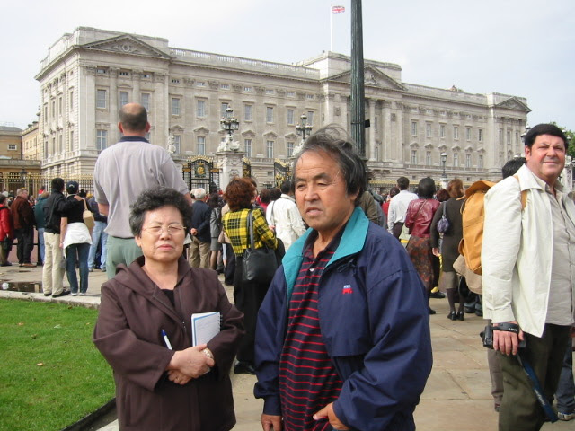
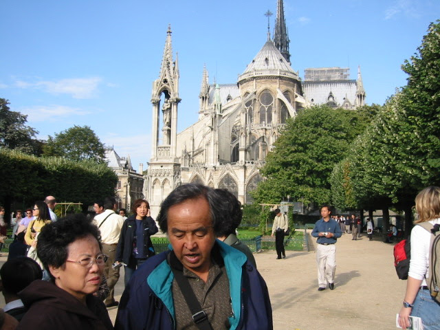
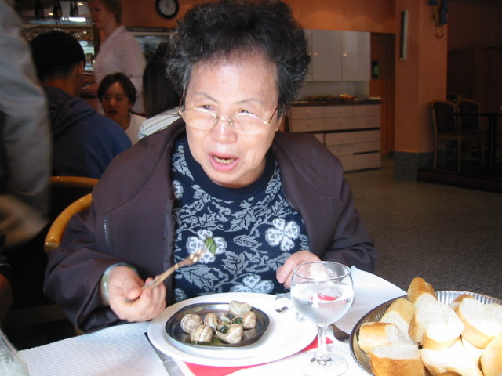
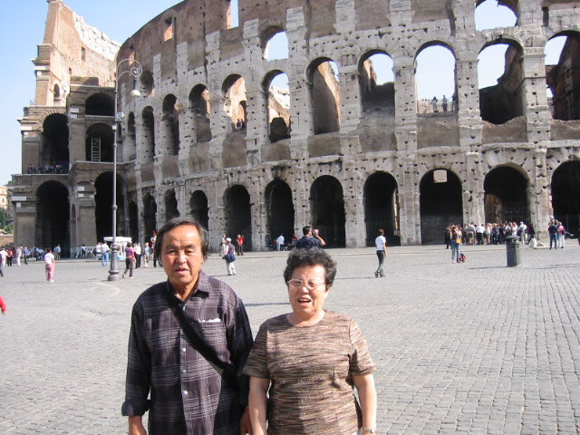

Went through 65 video tapes1, containing family or home recordings.
These recordings contain the first 15 years of a married life, arrival of children and visits with family members and visits to places in the US and abroad.
The Analog to Digital transfer took over 200 hours.2
After viewing, editing, digitizing, and uploading these memories, this is a summary of lessons learned.
Not Where or What, but Who
Not When or How, but Now
A more complete listing is here, Section 1
But Who
Before starting, I imagined I would save some of the well known places in the video.
However, very few images of places or things were saved into the digital format, they were not that interesting anymore.
The Great Wall, The Vatican, The Eiffel Tower, to name a few.
Yes they are marvels of human achievement, but if I decided to visit them next month, they will still be there.
But the scenes with the people – I kept.
Those that I lived, worked or traveled with are no longer here or are living far away or have grown up.
Those scenes with a familiar people were captured and shared.
There were several instances, where forgotten moments and unexpected guests appeared on the screen.
One such event was a 1-year birthday celebration at the Wymount Terrace.
People were squeezed to a 143 square feet space, it was difficult to recognize but there were faces that I haven’t seen in decades.
People accepting and taking a moment from their schedule to participate.
Making memory for the parent and the child, even though the child is seen crying because of the heavy, uncomfortable costume.
But Now
It was wonderful to see our parents age through their 60s, 70s and 80s with vibrancy – finally slowing down in their late 80s.
Setting a model for us to follow.
11 month old child is about to fall again, but he takes another step. Siblings are cheering, mom and dad are extending their hands. The child smiles as he takes one step after another.
When children are little and they are trying something new, everyone encourages him or her. As they grow older, not as much attention.
Greatness and beauty are made and captured little by little, some captured on digital medium but most are captured in hearts and minds of individuals that have been touched and served with love.
Life is a wonderful gift.
Can be experienced near or far, preferably near.
Either now or in the future, rather to be enjoyed while young.
To be shared with those that are near - now.
A Full List
- Note : Discussions on the travel will be limited to that visit to Europe as a family some 20 years ago.
Lesson 1 : Children live on encouragement
11 month old child is about to fall again, but he takes another step. Siblings are cheering, mom and dad are extending their hands. The child smiles as he takes one step after another.
When children are little and they are trying something new, everyone encourages him or her. As they grow older, not so much attention.
Why is that so?
Lesson 2 : It is not how but where
Visited Europe as a family, a part of tour package. We flew across Siberia, bused through Alps, trained across France on TGV, flew across the Channel.
Our destination was major cities of the western Europe.
We were glad to be there with the family and that our parents could join us.

Lesson 3 : Not Now but Soon
Looking back has an major advantage. Knowing major events that have occurred and its sequence. It was interesting to see people going about their day to day, normal activities.
As Sister K points out,
If you knew what would happen 5 minutes in the future,
you would die either because
you will be too happy or too sad.
In this life, not knowing the future in full, is normal and a blessing.
Lesson 4 : Our parents showed us how to live
On that trip to Europe, my father was 70, my mother was 68. Yet, not only they kept up with young people but also helped with little ones.
They also had curiosity and wanted to learn as much as possible
On life’s journey, it is good to have seasoned guides . Also to see how to age well and not be afraid of life.

Lesson 5 : Focus on the People
Doesn’t matter how you get to your destination, it is the people that you travel with that matters.
Was surprised at how unimportant and uninteresting various modes of traveling were. Trains, Buses, Airplanes, Boats, are some of the means of getting to destinations. But after a few decades, it seemed to matter the least in those footage.
People, however, were interesting to look at. How they conversed, how they spent their time.
Lesson 6 : Buildings vs Nature
Buildings were interesting at the time of visiting. Viewing again, it is a fixed object whereas people have grown, changed and moved on.
One is static, man-made, decaying The other is evolving, renewed, and eternal.
Hard to capture the majesty of nature. We will always try, either using photography or videos. Most important is the feeling or inspiration gained and whether our lives have changed because we came in contact with the nature
Lesson 7 : Importance of Meals

I may not recall most of the sites that we visited. However, I can remember all of the meals we ate.
- Chinese meal in London.
- Escargot in Paris
- Fondue in Chamonix
- Pasta in Florence
- Pizza in Rome
Perhaps it was the local (except in London) preparation, every dish was delicious.
Maybe it was that we were all starved from tightly scheduled tours.
Dining after a long day of travel with the family – that was a highlight.
Lesson 8 : Let Children be Free
Saw a number of instances with Sister K and I tried to have our children act in a certain way or say something the way we envisioned.
A forced compliance.
Best videos all had this in common. It was spontaneous. Letting children say and do based on their understanding at that time.
One of the memorable moments was when our 3.5 year old daughter and her 2 year old brother acted out the highlights of Snow White – all from her memory.
Lesson 9 : Not where but when
The trip was tightly planned. For the most part, it went as planned.
But when the train ride through the Alps was replaced by a bus ride, it meant we arrived in Milan at night.
We saw the city in darkness and took pictures of the cathedral in night-light mode.
Pictures and videos were disappointing
Living near a mountain, we know the terrain and guess the weather pattern based on the night and morning sky.
We can usually predict, with a high degree of accuracy, whether a sunset or sunrise near the mountain would be more dramatic.
That allows us to be at a certain location at a given time to capture those gifts of nature
Lesson 10 : There is beauty all around
I would welcome an opportunity to travel to Europe or Asia again. However, if my international travel days are over, I am satisfied with my past journeys.
Have also realized that, near home and at home is where most significant events and people are.
And greatness and beauty are not in a well known location or well advertised (reviewed) restaurants, or well chronicled sites.
